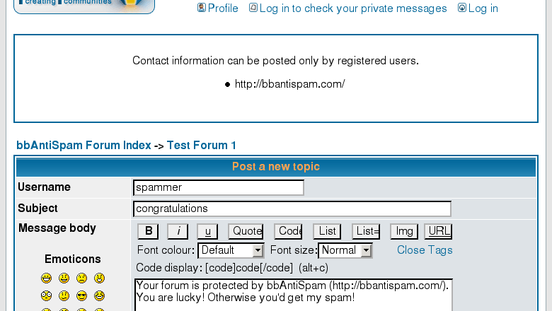

Can guest users post to your forum? Why not? If you are a small forum, you lose a lot of postings. Users are lazy, they don't like registering. Instead, they go to a more friendly forum.
Allow guest posts, and your forum will be more popular. Unfortunately, also between spammers.
Solution is bbAntiSpam (disclamer: I'm the author). Download it, find the file install.txt inside, follow the instructions and enjoy.
The magic bubble of bbAntiSpam is filtering contact information. If an unregistered user posts a link, the whole posting is rejected. All the spam has links, therefore all the spam is rejected.

Posting is rejected by bbAntiSpam
Note that Textual Confirmation and bbAntiSpam benefit the community by sending updates to the spam database. If you don't like it, then these tools are payware for you.